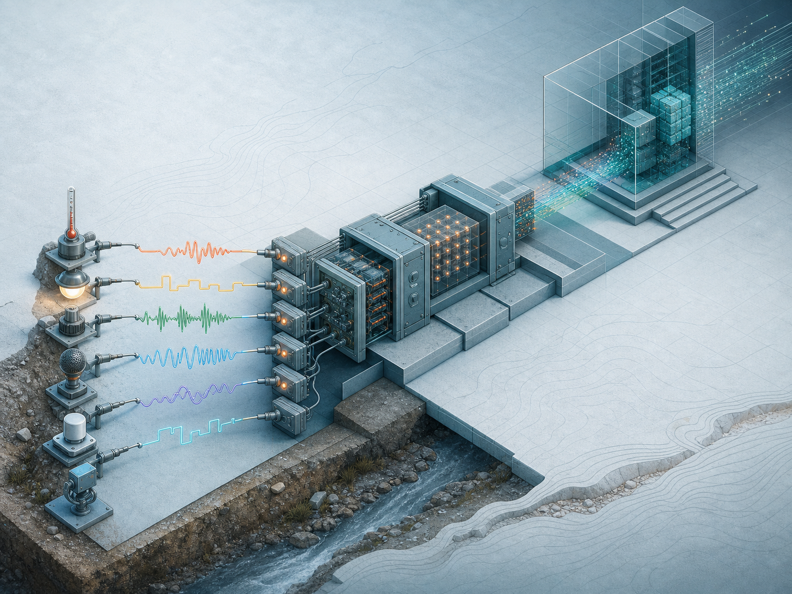
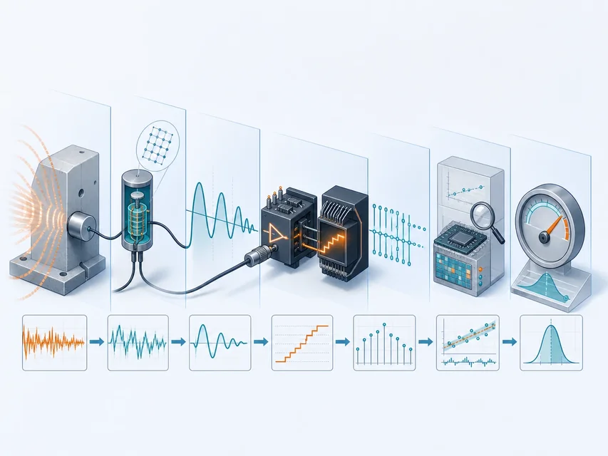

感 Sensing
使用传感器检测或测量物质世界中的变量
输出代表光、温度、压力、声音等参量的信号

把物质世界变成可理解的数据
 VER. 2608
Built with impress.js
VER. 2608
Built with impress.js
感知系统可按感知流程、信号链、节点网络和工程证据逐项分析
测到数据不等于已经理解了对象或事件
使用传感器检测或测量物质世界中的变量
输出代表光、温度、压力、声音等参量的信号
解析、解释和理解传感器数据
形成关于对象、状态或事件的有意义信息
感知把测量信号变成可用于判断的信息
传感器完成“感”，计算和场景信息帮助形成“知”
感：物理量 → 传感器信号 → 数字数据 知：数字数据 → 状态／事件理解 用：决策 → 执行
温度、湿度、压力、光线、声音、气体或生物量
传感器将变化转换为可传输和处理的信号
从数据中识别对象、状态、趋势或异常
为控制、告警、分析或用户体验提供依据
没有可靠感知，物联网后续决策只能建立在不完整信息上
| 动作 | 请判断所在阶段 | 请写关键证据 |
|---|---|---|
| 测量轮胎压力 | 感／知／决策／执行 | 填写证据 |
| 从图像中识别行人 | 感／知／决策／执行 | 填写证据 |
| 判断前方存在碰撞风险 | 感／知／决策／执行 | 填写证据 |
| 触发车辆制动 | 感／知／决策／执行 | 填写证据 |
区分感、知、决策和执行，定位问题所在
敏感元件感受变化，转换元件输出电信号
被测量 → 敏感／转换 → 信号调理 → 模数转换器 ADC → 数字数据 → 处理／通信
感受被测量的变化
把敏感元件的输出转换为电信号
提供电源、放大、滤波和信号调理
处理、传输、存储和理解数字数据
图中主链从被测量到数字数据；后端系统负责后续处理，不是传感器本体

传感器输出经调理和数字化，更易统一处理
数字信号仍有误差，但在一定范围内可以再生
连续变化，长距离传输会受到衰减和噪声影响
误差可能随路径逐步累积
幅值离散，可在一定范围内判决和再生，配合纠错提高可靠性
便于统一处理和传输
数字化改善可处理性，但采样、量化和测量误差仍然存在
| 动作 | 请写主要作用 | 请写需要关注的边界 |
|---|---|---|
| 敏感元件发生变化 | 填写作用 | 填写边界 |
| 转换成电信号 | 填写作用 | 填写边界 |
| ADC 采样与量化 | 填写作用 | 填写边界 |
| 数字校准并加状态码 | 填写作用 | 填写边界 |
先定位变化发生在哪一步，再判断误差来自测量、转换、数字化还是传输
传感器互连后，多个节点协同感知空间、对象和事件
节点：感知＋计算／通信＋能量 路径：节点 → 自组织／有线网络 → 汇聚 → 平台与应用
多点、多类型传感器协同感知
感知、计算、通信和能量模块组合
接收多跳数据并接入更大网络
多个节点通过协作形成整体感知
本地计算可能减少通信量和通信能耗，但会增加节点复杂度；维护仍需另评估
01
02
03多源数据
→ 校准、压缩与融合
→ 面向任务的判断依据选择在哪里计算，要同时比较时延、带宽、能耗和可靠性
| 措施 | 请判断主要改善 | 请写仍需考虑的边界 |
|---|---|---|
| 摄像头与激光雷达融合 | 填写改善方向 | 填写边界 |
| 节点本地压缩上传 | 填写改善方向 | 填写边界 |
| 节点间多跳转发 | 填写改善方向 | 填写边界 |
| 太阳能能量采集 | 填写改善方向 | 填写边界 |
感知优化要同时检查新增边界和系统权衡
这些示例采用不同分类轴；选择还要看参量、物理机制和部署环境
接触或非接触测量热状态
气敏传感器检测气体成分或浓度
利用发射与回波进行测距或探测
把光学场景转换为图像等高维数据
利用外界扰动引起的光信号变化进行测量
教材典型示例，不构成完整目录；分类轴可交叉，选择还要看参量、机制、环境与维护
同一目标可能需要多种传感器互相印证
| 任务 | 可能的感知方式 | 关键约束 |
|---|---|---|
| 夜间围界入侵 | 振动、红外、视频等融合 | 误报、漏报和全天候运行 |
| 管道温度监测 | 接触式温度测量 | 安装、量程和耐受 |
| 气体泄漏识别 | 气敏传感器与环境参数 | 选择性、校准和安全 |
| 车辆距离测量 | 超声或图像等 | 反射、遮挡和实时性 |
| 桥梁形变监测 | 光纤、应变或位移传感器 | 长期稳定和结构耦合 |
传感器选择由被测量、环境和后续决策共同决定
| 需求 | 请填写更接近的选择 | 请写判断依据 |
|---|---|---|
| 监测温室温度趋势 | 填写感知方案 | 填写判断依据 |
| 发现气体浓度越界 | 填写感知方案 | 填写判断依据 |
| 识别围栏攀爬行为 | 填写感知方案 | 填写判断依据 |
| 观察桥梁细微形变 | 填写感知方案 | 填写判断依据 |
好的感知方案要说明为什么这个信号能支持目标判断
节点通过多跳协作把数据送到汇聚节点
示意路径：节点 → 邻居／多跳 → 汇聚节点 → 更大网络
覆盖圈=感知范围，不是通信范围；箭头=示例链路；汇聚节点=上行出口；电量=能量约束
感知、处理、通信和能量共同决定 WSN 能否持续工作
测量环境或对象状态
过滤、融合和路由判断
与邻居或汇聚节点交换数据
电池、供电或能量采集
模块组合要在覆盖、时延、可靠性和寿命之间权衡
部署更多节点不一定解决所有问题
点覆盖监测目标，栅栏覆盖检测穿越，面覆盖（区域覆盖）观察整个区域
覆盖空洞会让系统看不见关键位置
休眠、低功耗通信和本地融合通常可减少能量消耗；多跳要结合链路条件判断
节点失效会改变路由和覆盖范围
WSN 设计要同时验证覆盖、连通和寿命
| 现象 | 请写优先检查对象 | 请写需要的证据 |
|---|---|---|
| 区域出现感知空洞 | 填写优先检查对象 | 填写需要的证据 |
| 节点数据到达很慢 | 填写优先检查对象 | 填写需要的证据 |
| 电池很快耗尽 | 填写优先检查对象 | 填写需要的证据 |
| 汇聚节点无数据 | 填写优先检查对象 | 填写需要的证据 |
用覆盖、路由、能量和汇聚证据定位网络问题
不同环境会改变“好方案”的定义
| 场景 | 主要感知挑战 | 工程权衡 |
|---|---|---|
| 围界监测 | 全天候、低漏报率与低误报率 | 多传感器、融合、维护和响应 |
| 生态监测 | 不干扰环境、长期无人值守 | 加固、能源、覆盖和低维护 |
| 矿井安全 | 恶劣环境和高风险 | 防爆、混合组网、可靠告警 |
| 农业与用电 | 空间差异和长期趋势 | 低功耗、成本、反馈与解释 |
感知系统的最终证据是决策或服务是否可靠，而不是数据图表是否漂亮
从被测量追到反馈结果，检查每一段证据
01
02
03
04
05被测对象与参量
→ 传感器与安装
→ 节点、网络与能量
→ 数据融合与判断
→ 告警、控制或服务反馈明确参量、事件、空间和时间范围
选择机制、量程、能量和保护方式
安排覆盖、路由、汇聚和数据策略
检查误报、漏报、延迟、寿命和反馈
完整方案要能测到、传回来、解释清楚、维护得住并支持行动
| 已知描述 | 请标出已有证据 | 请写仍需补充的证据 |
|---|---|---|
| 传感器精度很高 | 填写已有证据 | 填写补充证据 |
| 节点可以无线通信 | 填写已有证据 | 填写补充证据 |
| 平台能识别异常 | 填写已有证据 | 填写补充证据 |
| 数据持续上传 | 填写已有证据 | 填写补充证据 |
单项指标不能代替系统证据
分析感知系统时，按感知流程、信号链、节点网络和工程权衡逐项判断